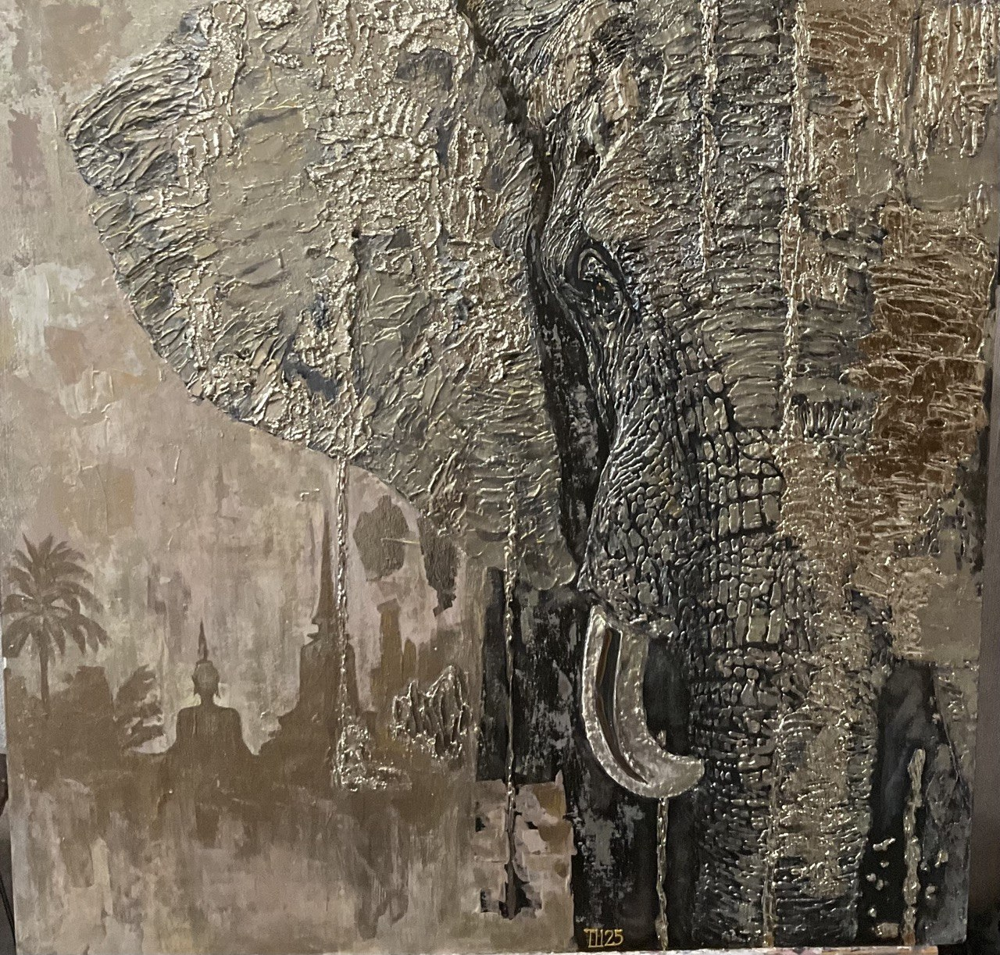

Величественная фигура слона воплощает монументальную, спокойную и защищающую силу. Страж и проводник в мир духовности
70х70 см.
Арт-борд 70х70 см, текстурная паста, акрил, зеркальная поталь, зеркальный элемент, лак.
Картина выполнена в современной смешанной технике (Mixed Media) с акцентом на объем и фактуру. Для создания мощного рельефа кожи слона, морщин вокруг глаз и складок на ушах использовалась текстурная паста. Мазки наносились мастихином, создавая грубую, первозданную текстуру, которая имитирует настоящую мощную кожу гиганта. На выступающие части рельефа наложена листовая поталь (имитация сусального золота). Из-за неравномерности текстуры золото легло с эффектом благородной патины и старины.
В индуизме Ганеша — это божество с головой слона почитаемое как устранитель препятствий, покровитель мудрости, благополучия и искусства. Величественная фигура слона на переднем плане воплощает эту монументальную, спокойную и защищающую силу. В левом нижнем углу картины едва уловимыми силуэтами проступают очертания буддийского храма, ступ, и восседающей фигуры Будды. Это погружает зрителя в атмосферу древней Азии, превращая портрет животного в сакральный образ. Слон здесь — не просто обитатель джунглей, а страж и проводник в мир духовности. Обилие золотых оттенков на коже слона символизирует божественное сияние, чистоту и просветление. Свет, струящийся по его текстурному уху и бивню, ассоциируется с благословением и богатством, которые традиционно дарует Ганеша.